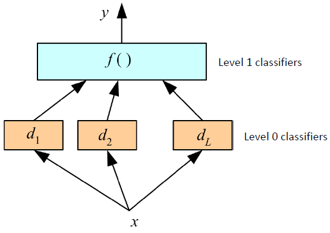

- Ensemble classification combines multiple classifiers to improve accuracy
- Advantage
- Large datasets: if dataset is too large we can train different models on subset of the data.
- Small datasets: Can handle them with bootstrapping (random sampling)
- Can solve complicated problems which can’t be solved using single classifier.
1 Types of Ensemble Classifiers
- Bagging (bootstrap aggregating)
- Train several models using bootstrapped datasets
- The majority classification is selected
- Boosting
- Use several weak classifiers to create a strong classifier
- Resample previously misclassified points
- Stacking (stacked generalization)
- Train multiple tiers of classifiers
- Higher tiers can correct lower tiers
2 Bagging
- Problem: we have only one dataset.
- Solution: generate new ones of size n by bootstrapping, i.e. sampling it with replacement
- Bagging works because it reduces variance by voting/averaging
- Usually, the more classifiers the better
- Some candidates:
- Decision tree, decision stump, SVMs.
- Can do this with regression too: Regression tree, linear regression
2.1 Example: Random Forests
- Random forests (RF) are a combination of tree predictors, it’s a variant of bagging.
- Extremely successful, especially on Kaggle challenges.
- Each tree depends on the values of a random vector sampled independently
- The generalization error depends on the strength of the individual trees and the correlation between them
- Using a random selection of features yields results robust w.r.t. noise
2.1.1 Random Forests: Algorithm
- Given a training set S
- For i = 1 to k do:
- Build subset S_i by sampling with replacement from S
- Learn tree T_i from S_i
- At each node:
- Choose best split from random subset of F features
- Each tree grows to the largest extent, and no pruning
- At each node:
- Make predictions according to majority vote of the set of k trees.
- If there are M input variables, a number m is specified such that at each node, m variables are selected at random out of the M and the best split on these m is used to split the node. The value of m is held constant during the forest growing.
- Depending upon the value of m, there are three slightly different systems:
- Random splitter selection: m =1
- Breiman’s bagger: m = total number of predictor variables
- Random forest: m << number of predictor variables. Breiman suggests three possible values for m:\frac{1}{2}\sqrt{M}, \sqrt{M}, \text{ and } 2\sqrt{M}
2.1.2 Features of Random Forests
- One of the best in the business
- It runs efficiently on large data bases
- It can handle thousands of input variables without variable deletion/reduction
- It gives estimates of what variables are important in the classification
- Does not overfit by design
- The generalization error of a forest of tree classifiers depends on the strength of the individual trees in the forest and the correlation between them. ( if correlation is high it means trees are similar and not so useful)
2.2 Bagging: when
- Can help if data is noisy.
- If learning algorithm is unstable, i.e. if small changes to the training set cause large changes in the learned classifier.
2.3 Bagging: Why
- Let S= \{(x , y ), i=1\dots N\} be the training dataset
- Let \{S_k \} be a sequence of training sets containing a sub-set of S
- Let P be the underlying distribution of S.
- Bagging replaces the prediction of the model with the majority of the predictions given by the classifiers S. \phi(x,P)=E_s(\phi (x,S_k))
3 Boosting
- Use several weak classifiers to create a strong classifier
- Resample previously misclassified points. (This is not done by bagging)
- Strong Learner: This is the objective of machine learning where we take labelled data for training and produce classifier which can be arbitrarily accurate.
- Weak Learner: Take labelled data for training and produce a classifier which is more accurate than random guessing.
Can a set of weak learners create a single strong learner?
3.1 Key Idea
- An algorithm for constructing a “strong” classifier as linear combination of “simple” “weak” classifier f(x)=\sum_{t=1}^T \alpha_th_t(x)
- Final classification based on weighted vote of weak classifiers
3.2 Adaboost Algorithm
Given (x_1,y_1),\dots (x_m,y_m) where x_i \in X,y_i \in Y =\{-1,+1\}
Initialize D(i)=\frac{1}{m}
For t=1,\dots T:
- Find the classifier h_t:X \rightarrow \{-1,+1\} that minimizes the error with respect to the distribution D_t:
\displaystyle h_t = \argmin _{h_j \in H} \epsilon_j, where \displaystyle\epsilon_j=\sum_{i=1}^m D_t(i)[y_i \ne h_j(x_i)] - Prerequisite: \epsilon_t<0.5, otherwise stop.
- Choose \alpha_t \in \mathbb{R}, typically \displaystyle \alpha_t=\frac{1}{2}\ln \frac{1-\epsilon_t}{\epsilon_t}, where \epsilon_t is the weighted error rate of the classifier h_t
\boxed{\alpha_t \text{ stays same for all data points}} - Update
D_{t+1} \left(i\right)=\frac{D_t \left(i\right)\exp \left(-\alpha_t y_t h_t \left(x_i \right)\right)}{Z_t } where Z_t is a normalization factor (chosen such that D_{t+1} will be a distribution)
output of the final classifier :
H(x)=\text{Sign}\sum_{t=1}^T\alpha_t h_t(x)
Reweighting
\begin{align*}{}
D_{t+1} \left(i\right)&=\frac{D_t \left(i\right)\exp \left(-\alpha_t y_t h_t \left(x_i \right)\right)}{Z_t }\\
&=\frac{D_t \left(i\right)\exp \left(-y_i \sum_{q=1}^t \alpha_q h_q \left(x_i \right)\right)}{m\prod_{q=1}^t Z_q }
\end{align*}
Notice
\exp \left(-\alpha_t y_t h_t \left(x_i \right)\right) \begin{cases} \le1 &\text{if } y_t=h_t(x_i) \xleftarrow{y\times h(x)=1} \\ >1 &\text{if } y_t\ne h_t(x_i) \xleftarrow{y\times h(x)=-1} \end{cases}
we can see that weight of wrongly classified example is increased and weight of correctly classified example is decreased.
Dietterich (1998) showed that when a fraction of the output labels in the training set are randomly altered, the accuracy of Adaboost degenerates, while bagging is more immune to the noise.
3.3 A good weak learner
- The set of weak rules (features) should be flexible enough to be (weakly) correlated with most conceivable relations between feature vector and label.
- Small enough to allow exhaustive search for the minimal weighted training error.
- Small enough to avoid over-fitting.
- Should be able to calculate predicted label very efficiently
- Rules can be “specialists” – predict only on a small subset of the input space and abstain from predicting on the rest (output 0).
3.4 Gradient Boosting
Gradient Boosting = Gradient Descent + Boosting
- Fit an additive model (ensemble) in a forward stage-wise manner.
- In each stage, introduce a weak learner to compensate the shortcomings of existing weak learners.
- In Gradient Boosting, “shortcomings” are identified by gradients.
- Recall that, in Adaboost, “shortcomings” are identified by high-weight data points.
- Both high-weight data points and gradients tell us how to improve our model.
3.4.1 Gradient Boosting Algorithm
Input: Training set {\left\lbrace \left(x_i ,y_i \right)\right\rbrace }_{i=1}^n, a differentiable loss function L(y,F(x)),Number of iteration M
Algorithm:
Initialize model with constant value:
F_0(x)=\argmin_\gamma \sum_{i=1}^nL(y_i,\gamma)
For m=1 to M
- Compute pseudo-residuals: r_{im}=-\left[\frac{\partial L(y_i,F(x_i))}{\partial F(x_i)} \right]_{F(x)=F_{m-1}(x)}\;\text{for }i=1,\dots,n
- Fit a base lerner (e.g. tree) h_m(x) to pseudo-residual, i.e. train it using the set {\left\lbrace \left(x_i ,\boxed{r_{im}} \right)\right\rbrace }_{i=1}^n\;\; Notice the training set now contains residual instead of original data.
- Compute multiplier \gamma_m by solving the following one-dimensional optimization problem: \gamma_m=\argmin_\gamma \sum_{i=1}^nL(y_i,\underbrace{F_{m-1}(x_i)}_{\text{previous model}}+\gamma \times \underbrace{h_m(x_i)}_{\text{current model}})
- Update the model: F_m(x)=F_{m-1}(x)+\gamma h_m(x)
Output F_M(x)
4 Stacking (stacked generalization)
- Train multiple tiers of classifiers
- Higher tiers can correct lower tiers
- Combiner f () is another learner (Wolpert, 1992)
- Idea:
- Generate component (level 0) classifiers with part of the data (half, three quarters)
- Train combiner (level 1) classifier to combine predictions of components using remaining data
- Retrain component classifiers with all of training data
- In practice, often equivalent to voting

\tiny {\textcolor{#808080}{\boxed{\text{Reference: Dr. Vineeth, IIT Hyderabad }}}}